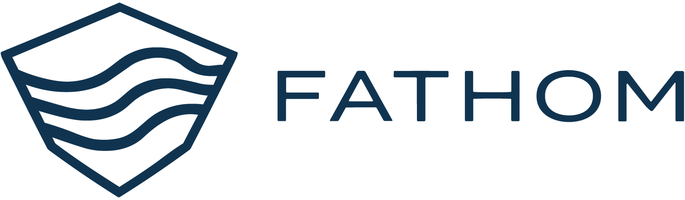
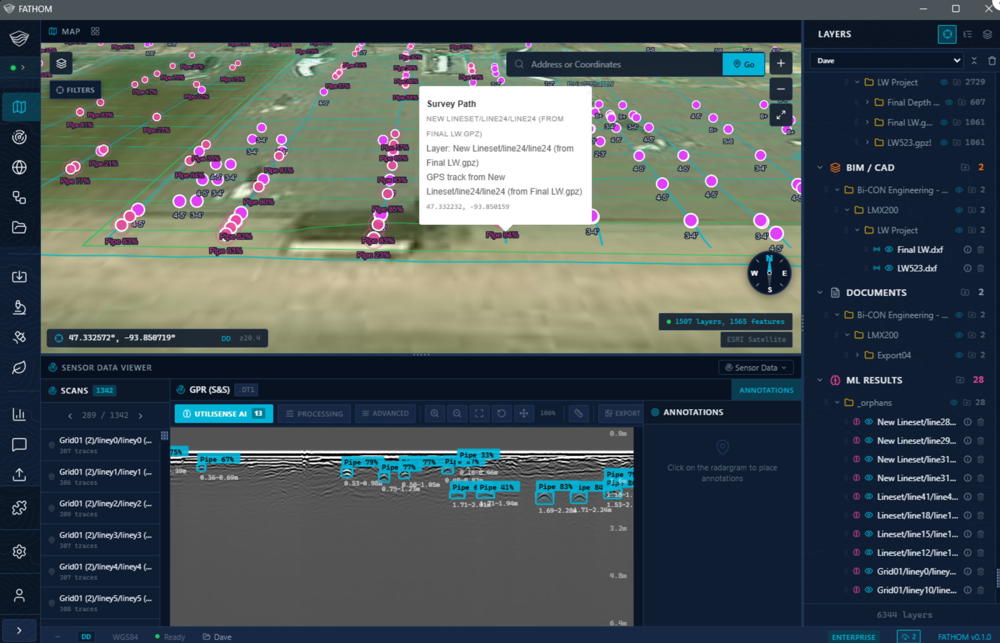
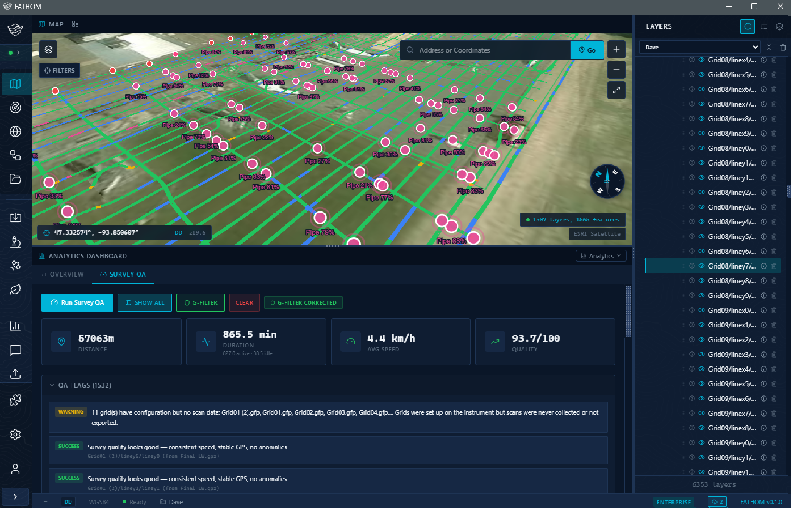

Appendix Platform Screenshots
Core Walker — Cloud Viewer & Project Management
Project list with spatial overview. Every project in the datalake is browsable, searchable, and viewable on the map — from any browser, any device.


FATHOM is a project data management platform that ingests, processes, and reasons across every sensor type, file format, and project record an infrastructure firm generates — transforming fragmented data into a unified, queryable intelligence asset that compounds in value with every project.
Sensors are getting faster, cheaper, and more numerous. Drone fleets deploy at scale. GPR units collect gigabytes per corridor. GNSS receivers log thousands of positions per second. The question is no longer can we collect this data — it is how do we interpret it fast enough, how do we store it, and how do we use AI to extract understanding from volumes that are unsustainable by human review alone?
The collection problem is solved. The intelligence problem is not. Today, project data lands on thumb drives, scattered cloud folders, and individual workstations. There is no unified pipeline from field to deliverable. Assembling a DOT submission means hours of manual work — hunting files, reformatting outputs, cross-referencing disconnected systems. Legacy data is dark: past surveys cannot inform current bids because no one can find or query them.
FATHOM solves all three. Store: every sensor type, file format, and project record in a unified, cloud-native datalake that scales without limit. Interpret: DSP, ML, and AI council models process ingested data automatically — faster than any team of analysts. Compound: the more data in the archive, the deeper the reasoning across bidding, risk, compliance, and project intelligence.
Two core components. Core Walker builds the datalake — a software-defined forward-deployed engineer that lets any non-technical person normalize and deploy project data in minutes. FATHOM Core sits on top — visualization, processing, AI interpretation, NLP querying, and automated reporting. Together, they turn fragmented data into a compounding intelligence asset accessible from any browser, any device, anywhere.
Core Walker is a software-defined forward-deployed engineer — a lightweight application available on desktop, web, mobile, and tablet that gives any non-technical person the power to aggregate project data and deploy it into the datalake. No data science background. No IT support. No understanding of file formats required.
1. Point. Select a drive — or multiple drives — on an edge device, sensor hard drive, laptop, or network share.
2. Scan. The proprietary forensic ingest engine launches a family of parsers that find, pair, and study correlation between filesets. Every file is read at the byte level — companion files matched, formats identified by binary signature, parser selected automatically. Output: a fully normalized project package.
3. Deploy. The package is compressed and transmitted to the tenant's cloud. Uploads are gated — data managers review and approve before data commits. Once approved, it is placed into both a relational database (structured query) and an analytical database (real-time ML). This dual-database architecture is how FATHOM can tell you the depth of a utility, the extent of a void, or the thickness of a pavement layer scanned four years ago across the country — while also reporting weather conditions, operator speed, and GNSS quality at the moment of collection.
Beyond ingestion, Core Walker manages the archive: browse, search, view, and organize from desktop, browser, tablet, or phone. Access is hierarchical — read-only on a single project up to full repository management. Every change tracked with automatic snapshots, backups, and full version history.
FATHOM Core is both a processing engine and an intelligence layer. Advanced algorithms run directly against the datalake: radar DSP (live), PPK and factor graph GNSS filtering for sub-centimeter accuracy (live), LiDAR point cloud manipulation (in development), satellite change detection (planned), and computer vision (in development). No exporting. No third-party toolchains. No context switching.
On top of that processing backbone, FATHOM Core delivers a unified project viewer, database manager, multi-sensor correlation, AI-driven analysis, natural language querying, and automated report generation. Key capabilities:
Separate from the processing engine, the AI council is a pipeline of specialized ML models that run automatically. GPR object detection identifies utilities, voids, layer boundaries, and pavement degradation (live). GNSS quality models flag degraded positions and coverage gaps (live). Video/CCTV models tag pipe defects, surface distress, and environmental conditions (in development). Record aggregation cross-references utility databases, geotechnical reports, and permits against sensor findings (in development). Each model contributes independently. FATHOM fuses the results — before a human ever opens a file. New models plug into the same architecture and immediately benefit from the full datalake.
All data is encrypted at rest and in transit. Each organization operates in a logically isolated tenant — client data is never accessible to other tenants. All user access is authenticated and logged with a full audit trail. Role-based entitlements control who can upload, view, modify, or export data at the project level. The platform's security architecture is designed with enterprise and government compliance requirements in mind, with SOC 2 and FedRAMP pathway on the compliance roadmap.
Organizations do not need to build, provision, or manage any cloud infrastructure. FATHOM's cloud service is plug and play — a fully managed, dedicated tenant environment that goes from zero to live in under 24 hours. No DevOps team. No procurement cycle. No months of IT planning.
Alternatively, if the organization prefers to own their infrastructure, our dependencies and database structures can be installed on any major cloud provider (AWS, Azure, GCP) with the same 24-hour setup window. Either path takes an organization from antiquated thumb-drive storage to a next-generation, queryable cloud datalake — overnight. This alone eliminates the need to invest in developing their own data infrastructure from scratch.
Everything that goes in can come out. One-click export to ESRI ArcGIS, QGIS, SHP, GeoJSON, KML/KMZ, DXF, GeoTIFF, PDF, and CSV. Data moves directly into the tools clients and partners already use — no reformatting, no middleware. Core format exports are live today. ArcGIS direct integration is on the active roadmap.
FATHOM's NLP is an always-available analyst. It does not return search results — it reasons, correlates, and acts.
Once every project — past and present — lives in a single, normalized, queryable archive, organizations unlock capabilities that are impossible with fragmented data. Some are live today. Others are in active development and will mature during and beyond onboarding. All of them depend on the same foundation: the datalake.
Core Walker is built and operational. The formats below are ingested, normalized, and spatially indexed today. If a client uses a format not listed here, we build the adapter during onboarding at no additional cost.
| Category | Supported Extensions | Vendors / Notes | Status |
|---|---|---|---|
| GPR | .dzt .dzg .dt1 .hd .gpz .rd3 .rd7 .rad .dt .3dr .gec .iprb .iprh .seg2 .gpr .s2p | GSSI, MALA, Sensors & Software, IDS GeoRadar, Impulse Radar, US Radar, Proceq — auto companion detection | Live |
| Seismic | .sgy .segy .su | SEG-Y and Seismic Unix (cross-hole, MASW, refraction) | Live |
| GNSS / GPS | .gpx .nmea .obs .rnx .csv | GPS Exchange, NMEA, RINEX — CSV auto-classified by headers | Live |
| LiDAR / Point Cloud | .las .laz .e57 .ply .pcd | ASPRS LAS/LAZ, ASTM E57, PLY, PCD with auto CRS detection | Live |
| GIS / Geospatial | .shp .geojson .kml .kmz .gpkg .gml | Shapefile (+.dbf .shx .prj), GeoJSON, KML/KMZ, GeoPackage, CityGML | Live |
| Imagery / Raster | .tif .tiff .ecw .jp2 .png .jpg | GeoTIFF, ECW, JPEG 2000, standard imagery with georeference | Live |
| CAD / BIM | .dxf .ifc | AutoCAD DXF, IFC Building Information Model | Live |
| Documents / ML | .pdf .yaml .log .zip .pt .onnx | Auto-classified PDFs, ML weights (PyTorch/ONNX), ZIP auto-expansion | Live |
| Category | Formats | Target |
|---|---|---|
| CCTV Pipe Inspection | PACP/NASSCO XML, WinCan DB, POSM, GraniteNet exports, MP4/AVI with chainage metadata | Phase 2 |
| GPS-Tagged Video | MP4, MTS, MOV with embedded GPS tracks, GoPro telemetry (GPMF), dashcam GPS overlays | Phase 2 |
| EM Locator Data | Radiodetection CAT/Genny, Vivax-Metrotech vLoc, RD8200 CSV/SHP | Phase 2 |
| Drone / UAV | DJI flight logs, orthomosaic GeoTIFF, photogrammetry point clouds | Phase 2 |
| Utility Records | One-call ticket XML/PDF, public utility as-built scans, permit documents | Phase 2 |
| Project Records | Contracts, submittals, inspection reports, daily logs, RFIs, change orders, safety records | Roadmap |
| Core Walker's adapter architecture accommodates new formats with a single adapter — no core refactoring required. | ||
A sensor crew finishes a survey — GPR, GNSS, video, EM, or any combination. They open Core Walker on a laptop or phone and upload the raw data directly to the datalake from the field. No organizing folders, no renaming files, no understanding the backend. Core Walker classifies, normalizes, and indexes everything automatically.
FATHOM Core runs DSP on radar data, applies PPK corrections to GNSS positions, and correlates every centimeter of sensor data to its spatial location. The AI council runs object detection (utilities, voids, rebar, layer boundaries), quality models, and record cross-referencing automatically. By the time the crew is back at the office, the data has been processed, interpreted, and fused.
A project manager opens FATHOM in a browser — from a desk, a conference room, or a job site trailer. Every data asset for that project is rendered on an interactive map, searchable and queryable. They can ask in plain language: "What utility conflicts, voids, or subsurface conditions exist within 500 feet of our planned excavation?" — and FATHOM delivers an answer backed by sensor data, historical records, and AI-scored confidence.
Client deliverables are generated in minutes. Conflict maps, void assessments, pavement condition reports, anomaly summaries, DOT submissions, and permit overlays are assembled automatically and exported to ESRI ArcGIS, QGIS, SHP, DXF, KMZ, GeoTIFF, or PDF. What used to take days of manual assembly becomes a button click.
Every project teaches the next one. A water main GPR survey reveals high clay content, shallow water table, aggressive corrosion environment. Two years later, a different team bids a gas line three blocks away. FATHOM surfaces the soil data, flags corrosion risk, and recommends protective sleeving — before anyone breaks ground. That insight was not in any report. It was in the data, waiting for a system smart enough to connect it.
A human reviews a dataset looking for one thing — the utility, the void, the layer thickness they were sent to find. FATHOM looks at everything. The system does not filter by task. It reports what it finds:
The datalake gets smarter with every project executed.
FATHOM is delivered as a SaaS platform with flexible deployment and pricing that scales with adoption:
New clients begin with a paid pilot to validate the platform in their ecosystem — configuring tenant pipelines, onboarding operators, and stress-testing against real project data before transitioning to a commercial license.
Purpose-built for DOT corridors, utility networks, pavement programs, geotechnical investigations, municipal systems, and subsurface complexity at project scale. Not a repurposed inspection tool or generic GIS.
Works with the sensors you already own and any you add in the future. No new hardware, no vendor lock-in, no disruption to field operations.
FATHOM ingests raw sensor files, runs DSP and ML against them, reasons across the archive, and generates deliverables. It starts where traditional platforms stop.
Clients own their data. Every file, record, and AI output belongs to the organization — hosted on FATHOM Cloud or their own infrastructure.
The team behind FATHOM is actively involved in subsurface defense application development. That same rigor in security, sensor fusion, and advanced processing underpins the civilian platform.
The archive grows smarter with every project. Historical data informs current bids. A corridor scanned years ago flags risk on an adjacent job today.
"You're already investing in subsurface data.
FATHOM is what makes that investment pay off — on every project,
including the ones that are already done."
For inquiries, please contact:
Tyler Dotson — Founder & CTO, SmartAuger Inc.
SmartAuger Technologies LLC (a SmartAuger Inc. subsidiary) | Akron / Cleveland, Ohio
Project list with spatial overview. Every project in the datalake is browsable, searchable, and viewable on the map — from any browser, any device.
Unified project workspace showing spatial map overlay, GPR B-scan viewer with AI council detections, layer management, ML results, and sensor data processing tools — all in a single interface.

PPK-filtered GNSS data with automated survey quality analysis — job duration, distance traveled, average speed, operator coverage heatmap, and collection quality grading. This is what forensic-level survey auditing looks like inside the platform.
